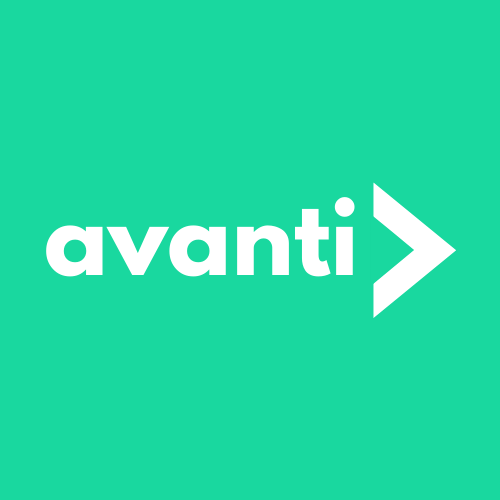
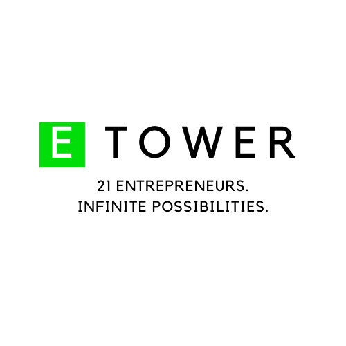
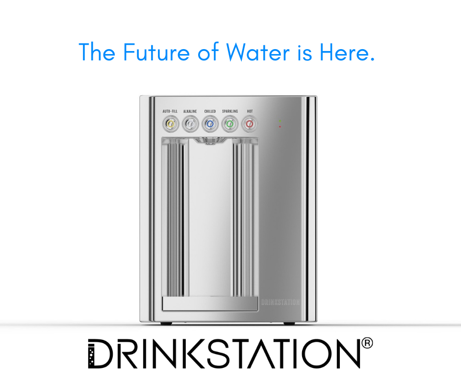
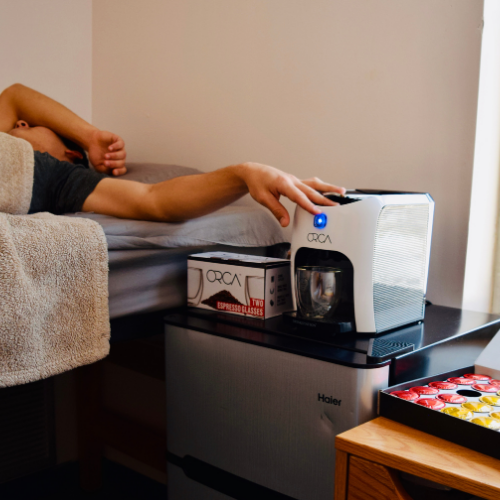

| Avanti |  | Avanti is a platform that connects high school students with local, paid jobs in their area. Currently Avanti is available to two zip codes in Los Angeles County. | 2019-Present | Visit the website | |
|---|---|---|---|---|---|
| eTower |  | Babson eTower is the entrepreneurship living community on Babson's campus. For the year of 2020, I had the privilge to lead the organization as its Vice President. During my tenure, I worked to foster growth for all of our residents and maintain the strength of the group through Covid. | 2019-2020 | Visit the website | |
| Drinkstation |  | Drinkstation is a revolutionary startup in the beverage space that aims to change how people drink water. Instead of using water bottles, a customer can purchase a Drinkstation and get instant, unlimite, filtered water that is chilled, sparkling, hot, or alkaline. I was fortunate to wrok for the company and help streamline the marketing, hiring, and operations processes. | 2015-2020 | Visit the website | |
| ORCA Coffee |  | ORCA Coffee was a startup I worked on that aimed to provide people with gourmet, Italian coffee through a coffee machine and pod subcription. Although the startup failed, I learned a gret daal about marketing, consumer behavior, and manufacturing hardware. | 2018-2019 | Visit the website | |